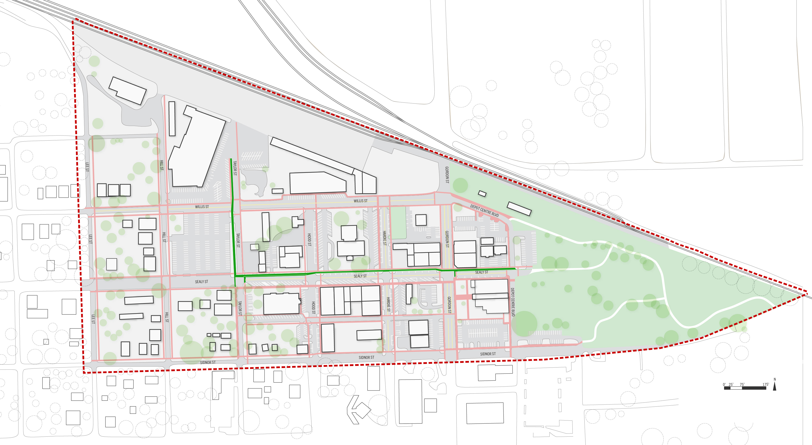
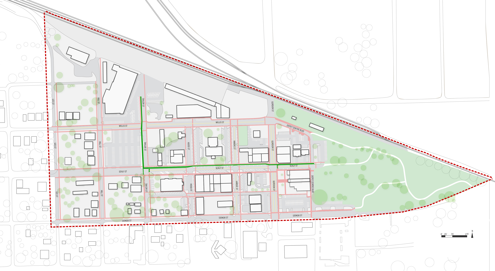

Land Use

 

Alvin Downtown Revitalization
- Location: Alvin, Texas
- Client: City of Alvin
- Project date: January 2016 - November 2016
Alvin is a small city of 24,000 people south of Houston. The goal of the city staff was to revitalize their downtown as a destination for local and neighboring residents. Site visits and initial stakeholder meetings revealed downtown to be highly pedestrian unfriendly and lacking in places for people to sit and spend time.
My team and I identified two anchor points in downtown, a popular and long-standing diner on one and a park on the other. We provided specific recommendations on how to make the L-shaped corridor between the two anchors more pedestrian- and bike-friendly. Recommendations included street parking, wider sidewalks, bike lanes, awnings, trees, benches, and street lighting. We also identified vacant lots and parking strategies to make downtown more of a destination. Lastly, with the stakeholders, we brainstormed several activities for the city to host that would bring people into downtown. I created all maps, diagrams, and renderings for the project.